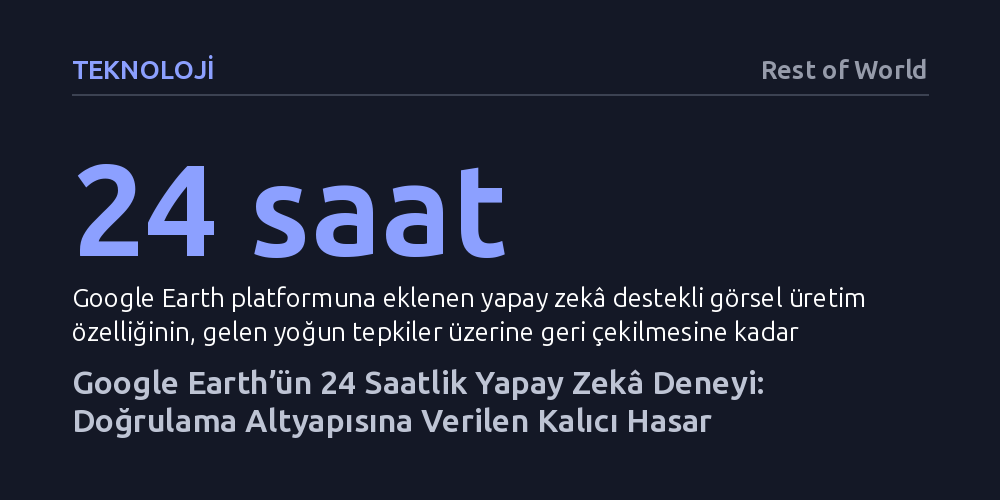

TEKNOLOJI · Rest of World · 2026-09-11
Google Earth'ün uydu görüntülerine doğrudan görsel üretim özelliği eklemesi, tepkiler üzerine 24 saatte geri çekilse de kriz bölgelerindeki görsel kanıt zeminini sarstı. Üretken yapay zekâ araçlarının doğrulama altyapılarına dahil edilmesi, 'yalancının kârı' olgusunu besleyerek gerçek kanıtları da peşinen şüpheli kılıyor.
Yapay zekâ sahteciliğinin asıl tehlikesinin inandırıcı yalanlar yaymaktan ziyade, savaş ve kriz anlarında bizzat gerçek kanıtların inkâr edilmesini kolaylaştırması olduğunu gösterir.

Açık kaynak araştırmacıları, gazeteciler ve insan hakları örgütleri için uydu görüntüleri uzun yıllardır kriz bölgelerindeki en somut doğrulama zemini kabul ediliyordu. Suriye'den Yemen'e, Sudan'dan Gazze'ye kadar savaş alanlarına bağımsız heyetlerin girmesinin engellendiği her yerde Google Earth gibi platformlar, olayların yerini ve yıkımın boyutunu tespit etmekte başvurulan tarafsız bir altyapı işlevi gördü.
Ancak Google, yirmi yıldır güvenilirlikle özdeşleşen bu sisteme doğrudan üretken yapay zekâ motoru entegre ettiğinde söz konusu zemin saatler içinde sarsıldı. Kullanıcılar koordinat girip basit bir metin komutu yazarak gerçek uydu fotoğraflarının içine gerçeğinden ayırt edilemeyen sahte sahneler ekleyebildi. Dakikalar içinde İran'da kurgusal bir nükleer tesis, Gazze'deki bir hastanenin yanında sahte bir bomba krateri ve sular altında kalmış bir ABD Kongre binası türetildi.
Gelen yoğun uzman ve medya tepkisi üzerine Google bu özelliği 24 saat içinde geri çekmek zorunda kaldı. Fakat bu geri adım, teknoloji devlerinin kriz bölgelerinde doğrulama aracı olarak kullanılan altyapıları tek bir sorumsuz güncellemeyle nasıl felç edebileceğini gözler önüne serdi.
Yapay zekâ şirketleri, sentetik içeriklerin tespit edilebilmesi için filigran ve yazılımsal etiketleme yöntemlerini savunuyor. Ne var ki sahadaki çatışmalar, bu teknik bariyerlerin pratikte ne denli zayıf kaldığını kanıtladı. Örneğin İsrail-İran savaşı patlak verdiğinde, Google'ın video üretim aracı Veo ile oluşturulmuş füze saldırısı videoları sosyal medyada dolaşıma girdi; kullanıcılar video üzerindeki görünür logoyu basitçe kırparak milyonları yanılttı.
Daha da vahimi, üçüncü tarafların veya devlet destekli aktörlerin operasyonlarında hiçbir filigran bulunmamasıydı. Tahran'daki Evin Cezaevi'nde gerçekleştiği iddia edilen bir patlamaya ait sahte görüntüler, dakikalar içinde uluslararası haber kanalları tarafından gerçek sanılarak yayımlandı. Dijital adli tıp uzmanlarının bu videonun yapay zekâ ürünü olduğunu kanıtlaması ise günler sürdü.
Dezenformasyon ortamında hız belirleyicidir. Bir sahte video kamuoyunun algısını şekillendirip tarafları yönlendirdikten sonra gelen teknik düzeltmelerin etkisi sınırlı kalmaktadır. Yazarın da belirttiği gibi, "Gerçekler, şüphe işini bitirdikten çok sonra varıyor."
Hukukçular Bobby Chesney ve Danielle Citron'un 2019'da tanımladığı "yalancının kârı" (liar's dividend) kavramı, artık günümüz çatışmalarının fiili işleyiş kuralına dönüştü. Bu kavram, inandırıcı sahte içeriklerin yaygınlaşmasının, kötü niyetli aktörlere doğrudan gerçek kanıtları inkâr etme imkânı sunduğunu ortaya koyuyor. Savaş suçu ya da katliam belgelendiğinde failler artık olayın içeriğini tartışmak yerine doğrudan görüntünün yapay zekâ ürünü olduğunu öne sürerek sorumluluktan kaçabiliyor.
Google Earth vakasının yarattığı asıl yıkım da bu noktada derinleşiyor. Uydu görüntülerinin bizzat kaynağında manipüle edilebilir hale gelmesi, çatışma alanlarından gelen gerçek uydu kanıtlarının üzerine peşinen bir şüphe gölgesi düşürdü. Sahte bir içeriğin kusursuz olması gerekmiyor; gerçeğin inandırıcılığını sakatlayacak kadar dolaşımda kalması hedefe ulaşması için yetiyor.
Üstelik ABD hükümetinin savaş gerekçesiyle ticari uydu şirketlerinin gazetecilere görüntü sağlamasını kısıtlaması, sahadaki gerçek bilgi arzını daraltırken sahte görüntülerin yarattığı boşluğu daha da büyüttü.
Yapay zekâ alanındaki hukuki düzenlemeler teknolojinin hızına yetişemiyor. Avrupa Birliği Yapay Zekâ Yasası'nın şeffaflık hükümleri henüz bağlayıcılığı zayıf ilkeler düzeyinde kalırken, Kaliforniya'nın getirdiği şeffaflık yasaları dağıtım platformlarını ancak 2027'de kapsayacak. Yapılan bağımsız testler, mevcut yapay zekâ üreticilerinin çoğunun kamuya açık bir tespit aracı sunmadığını, sunanların araçlarının ise kolaylıkla atlatılabildiğini gösteriyor.
Google, özelliğin "daha güçlü güvenlik önlemleriyle" geri döneceğini açıklasa da doğrulama altyapılarının doğası gereği sentetik veri üretimini kaldıramayacağı açıktır. Güvenlik önlemleri kriz patlak verdikten sonra yamalanacak bir detay değil, savaş ve insan hakları ihlallerinin yaşandığı en yüksek riskli alanlar hesaba katılarak en başta tasarlanması gereken bir zorunluluktur.
Google özelliği bir günde sistemden kaldırmış olabilir; ancak savaş bölgelerinden gelen her kareye yapışan güvensizlik tortusunu geri çağırmak mümkün değil. Yıkım alanlarında kendi çektikleri fotoğrafların gerçekliğini ispatlamaya çalışan muhabirler ve gerçeğin izini süren teyitçiler, sorumsuz bir ürün lansmanının yıktığı güven zeminini onarmak için ağır bir yükün altında kalmaya devam ediyor.